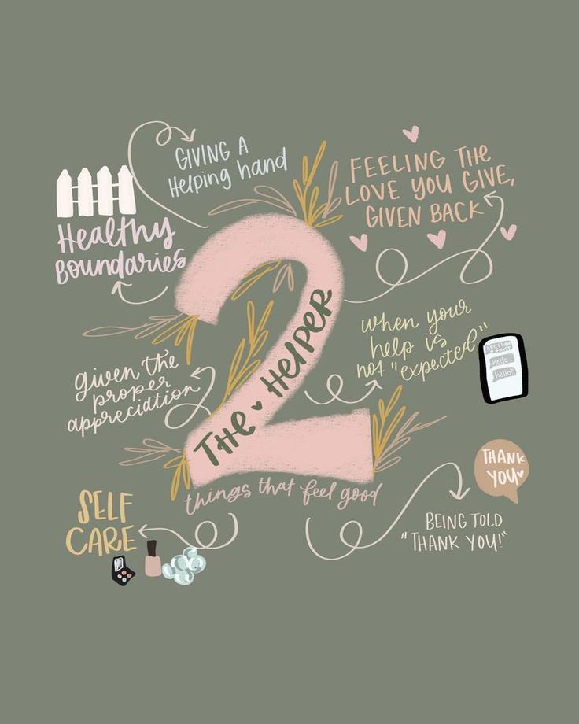

About Two

The title "Two" came from the Enneagram Personality type's Two. They describe the type two personality trait as caring, demonstrative, generous, and interpersonal. Two's goal is to not only be a self-help website--giving advices in coping and managing stress--but also as an informative website--to tell people the facts about our mental health and to break the stigma that surronds it. The information surrounding mental health are all from credible sources, such as the American Psychological Association. We aim let people know about what their mental health is and how it affects the overall health of the body.
Disclamer: This website should not be a substitue for a professional's diagnosis. Please do not self-diagnose!
About Author
Hello! I am Joshua Andrew Buenaflor! I'm an INFJ and 6w5 which means I have an introvert, intuitive, feeling, and judging personality traits. I'm also a loyalist. Things like fan-fictions, anime, medical dramas, and music are some of my guilty pleasures. I can be easily scared and startled. Occasionally, I can get sour. Currently, I'm struggling with Anxiety and Depression, but I'm getting treated as of now! My humor can get very dark and twisty sometimes, which people scold me for it. Meanwhile, I'm also a scholar in one of the most prestigious high schools in the Philippines, Philippine Science High School, in the SOCCSKARGEN Region Campus, and have the greatest friends I could get here. I sometimes like writing, graphic designing, maybe some video games as well! I tend to get too attached to things and makes it difficult for me to let them go. "What would it feel like to put this baggage down? If I'm being honest, I'm not sure I know how." (Six by Sleeping At Last).